算法研究者与工程师
需要算力、数据、同行协作、安静工作和快速验证。

三区两翼、多点协同的分布式创新网络
FTA GROUP提出全球AI第一线：以分布式创新网络连接三区两翼，以“三次过线”组织AI创新从原创策源、标准验证到城市应用，以五高法则决定项目优先级，以超级创新元承载空间与运营。三项原创贡献是：把三个重点区由并列园区转化为完整创新生产链，把五高诊断转化为项目准入与退出工具，把创新生态转化为可分期启动、可复盘调整的城市空间引擎。
一句话判准：一项 AI 创新必须完成三次过线——在 AI 原点社区证明“值得做”，在众智园证明“做得稳”，在大钟寺证明“有人用”；任何一关不过线，就回到上一环节，不进入城市规模化应用。
百年前，京张铁路以中国自主设计与建造证明工程自主；百年后，全球AI第一线把海淀的原创技术、验证能力、城市场景、资本服务和公共生活组织成一套可持续运转的自主创新网络。方案不把三区两翼理解为五个并列板块，而把它们组织为一条完整生产链：AI原点社区负责原创策源与概念验证，众智园负责标准、可靠性和生态验证，小月河场景赋能翼提供受控城市测试，大钟寺负责应用首发、市场与公众反馈，中关村科技服务翼提供资本、知识产权、合规、品牌和国际化服务；反馈再回到原点，进入下一轮创新。
本方案的三项原创贡献：
成果导航：
| 核心判断 | 本方案回答 | 可核验成果 |
|---|---|---|
| 是否紧扣任务书 | 三层范围、三区两翼与六项智能体任务逐项响应 | 正文、compliance_matrix.json、A3/A0与HTML |
| 原创性在哪里 | 分布式创新网络、三次过线、五高决策、超级创新元 | 本页、总体结构图、五高项目决策矩阵 |
| AI如何进入城市规划 | AI项目在策源、验证、场景、应用和反馈之间跨区流动 | 三次过线流程、12张场景卡、10套空间图层 |
| 如何实施 | 以0—6、6—18、18—36个月推进，先运营原型、再固化空间 | 三处重点区行动表、分期图层、项目决策矩阵 |
| 如何体现公共利益 | 同时服务居民、青年、企业、高校、游客与行动不便者 | 五类画像、公共服务与非AI通道、投诉和人工兜底 |
| 如何控制风险 | 临时边界显著披露；场景有责任人、停止条件和专业复核触发 | assumptions、sources、自检、场景卡与风险章节 |
| 是否便于继续深化 | 双语正文、图纸、HTML、指标、几何和专业矩阵闭环 | manifest与四门自检全部通过 |
六项智能体任务响应：
| 任务 | FTA回应 | 关键成果 |
|---|---|---|
| agent.1 总体概念与功能统筹 | 全球AI第一线、分布式创新网络、三次过线 | 品牌、Logo、总体结构与三区两翼分工 |
| agent.2 世界级AI创新生态 | 策源—验证—场景—应用—反馈的完整链条 | 7类全球案例、五类流动与服务网络 |
| agent.3 AI+场景赋能 | 12个可控原型，其中3个产业测试验证场景 | 场景卡、空间落点、人工责任与退出条件 |
| agent.4 公共空间与朝圣地标 | 公共创新脊、超级创新元和3处可更新地标 | 公共空间图层、开发者路线与荣誉展示 |
| agent.5 三重文化叙事 | 铁路自主工程精神—中关村创新文化—AI新文化 | 文化路线、公共节点和可持续内容机制 |
| agent.6 全球活动与长期运营 | 五高年度复盘与诊断—战略—设计—运营—投资反馈 | 年度活动、开发者社区、场景开放和招引转化 |
一项AI创新首先在AI原点社区完成问题定义、原创性判断和概念验证，回答“是否值得做”；随后进入众智园AI标准与生态创新区，完成模型、硬件、安全、可靠性和生态接口验证，回答“是否做得稳”；通过后由小月河场景赋能翼提供限定时间、限定空间、人工负责的城市测试，再进入大钟寺AI应用与场景创新区接受真实用户、市场和公共价值反馈，回答“是否有人用”。中关村科技服务翼贯穿全过程，提供资本、知识产权、法律合规、品牌和国际市场服务。任一环节未通过，项目退回上一环节修正或退出；通过后的反馈重新进入原点，形成下一轮创新。
“过线”同时对应两层京张语义：铁路通过一条线路把分散节点组织成共同系统，评测通过一条门槛才允许创新进入下一阶段。它不是复刻铁路符号，而是把京张的工程精神转化为AI时代的城市责任——先验证，再放行；能复核，才扩展。三次过线也不要求团队或设备在三区间反复搬迁。实施载体是一套统一项目编号和三份可追溯记录：原点形成概念验证记录，众智园形成标准与安全评测记录，大钟寺形成真实使用与公共价值记录；团队可在原址远程调用分布式服务，只有需要现场测试时才进入相应节点。
冠军记忆线｜同一个项目 JZ-AI-001 的完整旅程：原点不是“参观第一站”，而是形成问题定义、概念验证记录和公开责任人的策源门；众智园不是另一座园区，而是形成标准、安全、急停和人工接管记录的保障门；小月河只承接受控测试；大钟寺以真实用户、公共首层和连续到达检验使用价值。中关村服务翼贯穿资本、知识产权与合规。任何一份记录缺失，项目即退回、降级为非AI服务或退出，不以展示效果替代过线证据。
| 项目阶段 | 空间接口 | 必交证据 | 放行条件 | 失败动作 |
|---|---|---|---|---|
JZ-AI-001 / P1 值得做 | AI原点开放客厅＋概念验证服务台 | 问题定义、概念验证记录、责任人与数据清单 | 真实需求成立；责任与数据边界可审计 | 退回问题定义或停止 |
P2 做得稳 | 众智园评测场＋可围合测试花园 | 标准、安全、急停、人工接管记录 | 急停、越界、责任签认全部过线 | 降级为离线／非AI模式或退出 |
P3 有人用 | 大钟寺公共首层＋连续步行到达 | 重复使用、公共价值、投诉与人工服务记录 | 真实重复使用且重大风险为零 | 撤回设备／主题，反馈回原点 |
| 对比项 | 常规产业走廊 | 全球AI第一线 |
|---|---|---|
| 空间关系 | 企业和设施沿轴线并列布置 | 同一创新按三次过线在三区流动 |
| 项目选择 | 建设清单导向，项目越多越完整 | 五高决策门决定启动、暂缓、降级或退出 |
| AI角色 | 展示技术或提供单点功能 | 进入需求、评测、真实使用与治理全过程 |
| 公共价值 | 公共空间作为产业配套 | 居民反馈、非AI通道和公共共益是过线条件 |
| 成功标准 | 建成面积、活动数量、传播流量 | 可复核证据、跨区转化、重复使用与风险闭环 |
本方案由FTA GROUP以公司名义提交。FTA GROUP于2003年进入中国，总部位于上海，围绕城市创新区与科创社区形成TOP创新区研究院、FTA产服与FTA设计三类能力，累计完成1000余项科创项目实践。方案不是一份通用的“AI走廊”规划，而是FTA长期研究与实践在百年京张的专项转译：以钻石模型为总纲，以分布式创新网络为区域组织方式，以五高法则为营造路径，以超级创新元为创新区核心引擎。来源
官方公告确认统筹研究范围约43.6平方公里、总体设计范围约11.4平方公里、三处重点区域合计约368.4公顷，并明确众智园、北京AI原点社区与大钟寺三处重点区的任务方向。来源 面向智能体的任务书进一步提出三大定位、五大功能、三区两翼、六项专项任务和公开合规边界。来源
当前仓库尚未提供可验证的官方精确红线、控规条件、道路红线、现状建筑及权属数据。本版空间图层采用主办方维护的临时粗略边界，仅用于概念生成、可视化和内容评审；不得作为官方红线、精确面积、审批或工程依据。官方资料补齐后，边界、用地、建筑、道路、公共空间、分期和全部面积指标须统一复算。来源 空间数据

FTA方案场景推演·AI生成概念效果图：京张遗址公共创新脊连接多个完整而差异化的创新单元；图像不代表现状测绘或工程方案。

提交包机器核验图：仅用于对应临时边界、三层范围与数据锚点，不作为核心创意表达。
方案采用“城市使命—区域网络—创新区—核心引擎”四级工作框架。43.6平方公里统筹研究范围回答海淀如何服务北京建设全球AI第一城；11.4平方公里总体设计范围回答京张遗址如何成为贯通技术、人才、资本、场景与文化的公共创新基础设施；三处重点区域分别作为具有完整创新环节和差异化分工的创新区；每个创新区再识别一个承担资源汇聚、项目孵化与公共交往的超级创新元。来源 深度
四个层级不是彼此替代的名词，而是一条FTA式推演链：城市使命与品牌定义方向，钻石模型寻找决策优势，分布式创新网络组织创新区珠链，五高法则校准每个创新区，超级创新元汇聚最关键的空间与运营资源，运营反馈再反向修正设计。所有临时边界均以低对比虚线表达，设计重点落在可转移的网络、节点、界面和运营机制上。


技术图谱把公告约数、临时几何、三区实施接口、90日验证动作和正式资料复核串成一条证据链。图中的北箭头、比例尺与边界仅服务于概念拓扑阅读，不构成测绘、法定规划或工程依据。
FTA的钻石模型把“城市品牌—创新中心—城市决策”放在同一条价值链上。对百年京张而言，顶端品牌是“全球AI第一线”，区域载体是沿轨道与交通走廊组织的创新区珠链，核心抓手是各创新区内部的超级创新元，底部决策则是把有限的空间、政策和运营资源聚焦于北京最有可能率先形成全球影响力的AI优势。设计由此从“把功能装进地块”转向“为城市优势建立可持续的创新生命体”。
战略空间采用“两区一带”统领、“三区两翼”实施、六个片区协同的嵌套结构：AI原点社区承担中国AI策源点，北纬社区面向世界AI自由协作，百年京张AI创新带将两者组织为全球AI第一线；在本次11.4平方公里总体设计范围内，以众智园、AI原点社区、大钟寺三区和中关村科技服务翼、小月河场景赋能翼落实近期任务；沿TOD珠链继续培育不同主导者、不同专长的创新片区。两套表述不是冲突的口号，而是品牌疆域与实施结构的上下位关系。
全球AI第一线不是沿铁路排列办公楼的传统产业走廊，也不是“一个轴线加几个节点”的造型。FTA把它定义为一套分布式创新网络：基于真实创新需求形成若干分工不同、但具备相对完整创新环节的创新区，再由轨道交通、交通走廊和公共创新空间串联成珠链。创新活动因此去中心化分布，不同专业与人群能够在区际流动中发生交叉创新；每个创新区内部则保持必要的集聚度与完整链条。来源 来源 深度
五类网络分别是：知识与技术流连接高校、研究机构和企业研发；人才流连接工作、居住、学习和社群；资本与专业服务流连接投资、知识产权、法律和国际化服务；场景与数据流连接测试、评估、人工复核和城市应用；文化与公共生活流连接铁路遗产、中关村创新精神和面向公众的AI新文化。它们共同构成AI LINE 1的城市运行逻辑，但不替代任何法定规划或政府决策。
三者关系必须清晰：分布式创新网络是由多个创新区连接形成的去中心化格局；创新区是网络中的一颗“珠子”，一般控制在约1—6平方公里、项目本轮重点以约500—1000米服务半径和约1—3平方公里作为工作尺度，并以五高法则进行诊断与营造；超级创新元只是创新区最核心的创新引擎，类似社区中的社区中心，集中承载最强牵引者、共享设施、公共交往和运营入口，但不等于创新区全部。生态结构建议以“1家具有牵引力的平台或龙头、10家高成长企业、100个创新团队与服务伙伴”为培育目标；这是FTA的运营诊断假设，不是现状统计或招商承诺。
空间结构只是骨架，五高法则负责判断创新生命体能否运行：
五高不是五个并列章节，而是每个创新区、每张场景卡和每项分期投资共同使用的一把尺。五项本体同等重要；图表中的百分比只表示本轮诊断完成后形成的当期行动资源建议，会随年度复盘动态调整，不是预设权重，也不是对创新区质量的打分。
本轮诊断采用“公开事实—FTA专业判断—待补数据”三层证据，不使用缺乏统计基础的精确分数。结论表达为“已有基础、关键短板、行动方向”，用于决定空间与运营优先级，而不是替代正式产业、人口、交通或权属调查。来源 深度
| 五高维度 | 已有基础 | 关键短板 | 本轮行动方向 |
|---|---|---|---|
| 产业生态 | 海淀具备高校、科研机构、平台企业与AI企业集聚基础，沿线可串联策源、验证与市场转化 | 资源仍以机构和园区为单位分布，中小团队获得验证、客户与资本的链路不够短 | 以三个创新区形成“策源—标准生态—应用场景”差异化分工，并保留各自完整创新环节 |
| 文化社群 | 青年人才密度高，京张铁路遗产、中关村创新文化与沿线社区提供共同叙事 | 工作、生活、学习与公共交往仍易分离，居民和国际人才缺少稳定参与接口 | 建立创新客厅、青年生活站、公共文化活动和可持续的社区共同治理机制 |
| 服务网络 | 中关村拥有资本、知识产权、法律、标准、品牌与国际化服务资源 | 服务入口分散，共享算力、评测、数据合规和一站式转化服务尚未网络化 | 建设可预约、可追踪的公共服务底座，由科技服务翼组织跨区调用 |
| 创新场景 | 遗址公园、轨道站点、园区、社区及医疗教育资源形成多样真实场景 | 场景多为单点展示，缺少统一准入、责任人、人工兜底、评价和退出规则 | 由小月河翼组织场景清单，以十二个可控原型建立“开放—验证—复盘—退出”闭环 |
| 政策治理 | 北京和海淀具备AI政策与产业组织基础，任务书已提出跨区协同方向 | 尚缺面向三区两翼的常态协调、数据边界、年度诊断和资源动态配置机制 | 建立任务导向的协作平台、分级治理规则和年度五高复盘，不替代行政审批 |
整体诊断说明：本项目最突出的优势不是单一地块，而是沿线已有的知识、人才、企业、公共空间和服务资源；最核心的问题也不是“缺一个地标”，而是这些资源尚未形成可进入、可协作、可验证、可持续的创新网络。因此方案把设计重点从新增建筑量转向缩短转化链、增强人才黏性、共享专业服务、开放真实场景和建立长期治理。

图表先比较基础成熟度与问题紧迫度，再形成当期行动资源建议：服务网络26%、政策治理24%、创新场景21%、文化社群17%、产业生态12%。比例不表示五项本体的重要性，也不是预设参数或绩效得分；它只反映本轮诊断中“入口分散与跨区调用”最具网络瓶颈性，因此资源优先向服务网络、治理接口和场景规则倾斜，年度复盘后可重新分配。
本轮项目决策采用四态，而不是把所有设想同时列为建设清单。近期项目原则上须同时改善至少三个五高维度，明确建议运营主体、0—6个月原型、人工责任和退出条件；否则不进入近期项目池。下表是基于现有公开资料的概念建议，正式立项仍须由有权主体依据官方数据和专业论证决定。
| 项目 | 五高贡献 | 本轮决策 | 决策理由与进入下一阶段条件 |
|---|---|---|---|
| 原点城市客厅轻量原型 | 产业、社群、服务、治理 | 立即启动建议 | 可先利用既有首层或临时空间验证概念验证、路演、公共活动和服务转介需求；低复访或服务转介不成链时缩减 |
| 众智园评测场与可围合测试花园 | 产业、服务、场景、治理 | 条件启动建议 | 须先明确场地授权、数据隔离、人工责任、物理急停和投诉渠道；条件不全不得开放测试 |
| 大钟寺公共首层与应用首发原型 | 产业、社群、场景 | 立即启动建议 | 以可撤回的展测、路演和社区共益活动验证真实使用；不得以企业冠名替代公共运营目标 |
| 跨三环大型连桥或站城结构 | 社群、服务、场景 | 暂缓 | 等待交通、轨道、权属、消防、造价与无障碍专项论证；近期先做地面过街、导视和公共首层改善 |
| 独立建设纯展示型巨型AI雕塑 | 文化社群贡献单一 | 不建议单独建设 | 缺少持续服务和运营闭环；只有与公共学习、贡献记录和日常服务结合时才可转化为可更新地标 |
城市使命：把海淀最强的AI知识与产业优势转化为北京可被全球识别、被公众日常使用、能够持续自我迭代的城市创新能力。
总体愿景：全球AI第一线｜AI LINE 1——不是一条展示科技的景观轴，而是一条让原创技术、青年人才、企业需求、公共场景和专业服务持续相遇的公共创新主线。
核心定位：面向全球AI创新的公共创新基础设施与分布式创新区。它同时是原创策源与验证网络、青年创新与生活共同体、AI原生业态首发地、城市真实场景试验场，以及负责任AI治理的开放接口。
五维发展目标与五高法则对应：形成从策源到市场的短链产业生态；建立可负担、可参与、有归属感的人才与居民社群；构建跨区共享的一站式服务网络；形成可控、可复盘、可退出的真实场景组合；建立任务导向、跨主体协同、年度复盘的治理机制。空间上以一条公共创新脊组织三区两翼、多点协同；运营上以“诊断—战略—设计—运营—投资反馈”形成持续迭代；实施上以近期原型、中期成网、远期品牌输出控制节奏。
FTA方案场景推演·AI生成概念效果图：京张遗址公共创新脊连接多个完整而差异化的创新单元；图像不代表现状测绘或工程方案。
总鸟瞰之后，三张重点区鸟瞰把分布式网络落实到不同空间任务：大钟寺突出轨道枢纽、跨三环联系与应用首发界面；AI原点社区突出校园、城市道路与原点城市客厅之间的连续创新界面；众智园突出“一核两环、多测试花园”的到达与协作网络。三图采用统一的夜景语言便于横向比较，其中交通光带为概念性流线表达，不代表现状流量、道路工程或已批准建设内容。

大钟寺：以轨道站点和跨三环联系为骨架，强化公共首层、应用首发与真实场景反馈。

AI原点社区：以校园—街区—城市客厅的连续界面承接原创技术、青年人才与概念验证。

众智园：以共享赋能中心、协作环和受控测试花园构成标准共创与开发者生态网络。
七类全球创新生态只作为FTA判断的反证与校准：Kendall Square提示大学—企业的近距离协作，Eindhoven提示共享研发设施，Station F提示高密度创业服务，Toronto MaRS提示研究—资本—市场连接，Jurong提示研发制造融合，Barcelona 22@提示存量城区混合更新，Seoul DMC提示内容产业与城市体验。方案不复制任何案例的空间形式；最终结构、命名、场景与图像均来自百年京张条件和FTA方法论推演。来源 来源 来源
主品牌为“全球AI第一线｜AI LINE 1”，副标题为“三区两翼、多点协同的分布式创新网络”。标识采用两条开放曲线交叉成网：青蓝路径代表知识、技术与城市连接，新叶绿路径代表生态、社群与持续生长；交叉处生成红色核心和向下延伸的数字“1”，象征每个创新区以超级创新元汇聚资源、产生新价值。倾斜字标、双层速度线和开放端点强化“第一线持续向前”的动势。
标准色为明亮青蓝#08B9E6、新叶绿#16B85C和核心红#F2383D，深青#064B5B仅用于正文与字标。标准版用于封面、门户和正式文件；独立符号用于导视、场景认证和数字图标；反白与单色版用于深色背景、工程标识和低成本应用。AI LINE 1是方案提出的公共品牌方向，与FTA GROUP作者署名分列呈现，不冒充主办方官方标识，也不使用未授权企业商标、人物或字体。
总体设计形成“一条公共创新脊、三个差异化创新区、两翼服务网络、六个协同片区、多点超级创新元与社区单元”的空间结构。京张遗址公园不是景观背景，而是沿线共享的文化、慢行、生态、展示、测试和社群基础设施；东西向缝合界面连接社区、高校、企业和轨道站点；每个创新区内部以步行可达的产业社区与生活社区组织完整创新链。标准 空间数据
超级创新元不是一栋孤立的地标，也不是创新区的别称，而是创新区内部最具牵引力的复合核心：它集成创新中心、共享服务、公共交往、关键场景与运营入口，功能类似社区中心。众智园、原点社区和大钟寺均是创新区；三者分别由标准生态平台、原创策源网络和应用场景平台牵引，并各自识别一个或一组超级创新元作为核心引擎，同时在全区保留研发、验证、服务、交往与生活的相对完整链条。
更新策略坚持低扰动和可逆性优先：近期先使用现有公共空间、首层、闲置或低效空间植入服务节点和活动；中期在权属、控规、消防与交通条件核实后推进建筑改造和站城界面优化；长期再依据正式规划研究新增载体。由于现状建筑、权属和控规资料缺失，本方案不作具体地块拆除、法定容积率、建筑高度或工程可行性结论。[assumption:A-CONTROLS-001] 深度
空间供给不以单一办公为主，而是形成四类可适配载体：共享研发与测试空间、可拆分孵化与加速空间、公共创新与交往空间、人才生活与基础服务空间。它们通过公共首层、院落、小广场、步行界面和预约共享系统连接，使创新活动从封闭楼宇进入城市公共生活。每个新建或改造项目都要回答五个问题：是否补强产业链、是否形成社群、是否共享服务、是否适配变化、是否具备治理与退出机制；答不全的项目不进入优先清单。
FTA真实项目经验底座。 本区不是仅凭公开资料生成的假想案例。FTA已在AI原点社区开展整体诊断、产业主理与运营策略、核心空间场景营造、展厅实施及后续规划服务；本方案把其中已经形成的诊断—策略—空间—运营协同经验，转译为百年京张全线的原创策源节点。为保护客户与项目数据，公开成果只呈现可迁移的方法和空间原则，不披露合同、内部图件、诊断权重或未经授权的实施信息。来源
创新区定位与分工。 AI原点社区对应总体方案中的“原点社区”，定位为AI原创策源：依托高校、科研院所和青年创业者，聚焦0—1原创创新、AI for Science、交叉创新和成果转化，建设定义未来AI的“思想市场”与核心策源地。核心使命是同时成为AI原创技术全球首发地、全球AI青年创业首选地和全要素精准对接的生态服务站。来源 来源
五项诊断。 诊断围绕原创策源、青年创业与成果转化的关键断点展开。
| 维度 | 现有基础 | 关键问题 | 针对性提升 |
|---|---|---|---|
| 产业生态 | 顶尖高校院所、原创技术与人才密度突出 | 成果、团队、早期资本和企业需求分散，校园到市场支持不连续 | 实体化概念验证与转化中心，建设早期基金与耐心资本联盟，组织技术评估、原型开发和首发 |
| 文化社群 | 师生、研究者、创业者与国际人才具有高频交往潜力 | 缺少稳定的垂直社群、共同品牌和青年创业生活支持 | 构建“原点社群”，开展垂直社群、学术创业人试点、共学路演和公共文化活动 |
| 服务网络 | 孵化、投资、专业服务和政策资源基础丰富 | 服务入口分散，针对0—1技术与青年团队的精准性不足 | 建设共享赋能中心和一站式窗口，提供技术可行性评估、原型支持、种子资金、知识产权与合规服务 |
| 创新场景 | 成府路、京张创新带、站点及校园园区界面可形成连续场景 | 步行界面、枢纽活力和成果展示仍呈点状，要素未向交往场景集聚 | 以TOD修复空间结构，构建“一带一轴、双心一区”五大场景网络并选择节点预热 |
| 政策治理 | 具备形成高规格协同机制与模式输出的条件 | 多主体长期协作、成果输送和规则沉淀机制尚未实体化 | 建议成立原点创新共同体理事会，形成“原点原则”、常态成果输送机制和可复盘的模式白皮书 |
空间场景与核心超级创新元 空间数据 深度
| 空间层级 | 主要构成 | 核心作用 |
|---|---|---|
| 一带 | 百年京张AI创新带 | 承载技术应用、公共活动与跨区连接 |
| 一轴 | 原点大道（成府路）交往轴 | 营造步行友好界面，集聚小企业、服务与高频交流 |
| 双心之一 | 原点城市客厅｜核心超级创新元 | 集成发布路演、概念验证、世界会客、共同治理与一站式服务 |
| 双心之二 | 原点活力枢纽 | 连接轨道、人才服务、城市生活和高频交往 |
| 一区 | 原点科创集聚区 | 网络化布局孵化、加速、初创企业与金融风投功能 |
实施路径建议
| 阶段 | 行动主题 | 重点任务 | 阶段成果 |
|---|---|---|---|
| 近期｜0—6个月 | 立机制、塑品牌、热场景 | 建立共同体联席机制；启动原点开放日、城市客厅快闪、成府路步行改善与首批概念验证 | 形成可见的原点品牌和首批真实用户 |
| 中期｜6—18个月 | 聚生态、创价值、成网络 | 实体化概念验证与转化中心；链接早期资本、孵化服务、人才生活和沿线成果输送 | 形成校园—概念验证—资本—企业的连续支持链 |
| 远期｜18—36个月 | 成范式、强辐射、可输出 | 稳定原创首发、青年创业和全球合作机制 | 输出经实践检验的原点模式 |
建筑改造、跨路连接、基金与投资安排须由相应主体核实和审批。
FTA方案场景推演·AI生成概念效果图：铁路工业遗产、开放首层、孵化团队与社区日常共同构成文化社群。
FTA真实项目经验底座。 大钟寺同样来自FTA已经开展的节点诊断、营造与运营研究，而不是为参赛临时拼接的通用TOD案例。本方案沿用真实项目中形成的“五高诊断—站城缝合—公共首层—应用首发—运营复盘”工作链，再针对本次三区两翼任务重新组织。公开版不披露客户资料、内部图件、企业合作细节或尚未确认的工程条件。来源
创新区定位与分工。 大钟寺定位为AI＋应用与场景：依托现有平台经济、内容产业和市场需求基础，聚焦AIGC、智能硬件与线下体验、城市智能体和本地生活，形成应用创新与城市智能体构建区。具体平台企业仅作为潜在生态参与者示例，未经授权不构成合作、冠名或实施承诺。来源 来源
五项诊断。 诊断聚焦平台业务、应用创新与城市空间之间的协同效率。
| 维度 | 现有基础 | 关键问题 | 针对性提升 |
|---|---|---|---|
| 产业生态 | 头部内容平台、内容业务和AIGC应用基础强，市场反馈快 | 对单一平台依赖较高，初创—加速—链主—资本梯度仍不完整 | 强化多主体生态，同时培育或引进互补主体，组织专业孵化器、加速器和创新基金建议 |
| 文化社群 | 企业创新活动、周边高校、居住社区与文化资源多元 | 企业内部活动与城市公共生活分离，区域共同品牌和居民共益不足 | 发起创新开放日、创新者节和社区共益计划，形成可持续公共品牌 |
| 服务网络 | 轨道、金融风投、价值评估和专业服务基础较好 | 中小团队共享设施、跨界实验和生活服务入口不足 | 建设跨界实验室、共享赋能中心、一站式服务站和创新者生活包 |
| 创新场景 | 内容生产、产品展示、商业消费和城市智能体具备真实市场 | 北三环、铁路和消极空间造成割裂，场景缺少连续步行网络与统一规则 | 以TOD和京张创新带重构场景网络，激活消极空间并建设15分钟创新生活圈 |
| 政策治理 | 具备链主参与、多方共建和场景沙盒条件 | 跨主体治理、试验责任和区域成效跟踪机制尚未建立 | 建议成立创新区共建委员会，试点创新沙盒规则并建立区域活力仪表盘 |
空间场景与核心超级创新元 空间数据 深度
| 空间层级 | 主要构成 | 核心作用 |
|---|---|---|
| 核心超级创新元 | 灵境世界＋枢纽活力中心 | 集成城市地标、站城连接、产品展示、虚实体验和城市智能体场景 |
| 链主企业集群 | 平台业务、AIGC与互补型链主企业 | 提供应用需求、技术平台和快速市场反馈 |
| 企业成长梯度 | 孵化器、加速器、初创与加速企业集群 | 形成从团队到规模化企业的连续成长空间 |
| 专业服务网络 | 金融风投、价值评估、共享赋能和高校创新源头 | 支撑资本、评估、跨界实验和成果转化 |
| 公共场景带 | 京张创新带、公共站厅、发布厅、路演中心和公共首层 | 修复三环界面，连接城市生活与应用首发 |
核心超级创新元是整个创新区的引擎，不替代周边完整生态。近期优先采用地面安全过街、导视、公共首层和临时场景；跨路结构与站城一体化须另做工程论证。
实施路径建议
| 阶段 | 行动主题 | 重点任务 | 阶段成果 |
|---|---|---|---|
| 近期｜0—6个月 | 场景激活与社群培育 | 建立共建联席机制；启动开放日、公共首层、过街优化及AIGC／机器人商业原型 | 形成首批真实应用与公众反馈闭环 |
| 中期｜6—18个月 | 生态构建与服务升级 | 形成孵化器、加速器、共享赋能中心、跨界实验室和场景环 | 补齐企业成长梯度和共享服务 |
| 远期｜18—36个月 | 品牌塑造与模式输出 | 稳定链主与中小团队协作、城市智能体场景和区域品牌 | 形成可复制的应用创新区协议 |
基金、委员会、沙盒和仪表盘均为实施建议，不作为既有机构、已批政策或投资承诺。
FTA方案场景推演·AI生成概念效果图：文化记忆、内容生产、机器人服务、社区商业和夜间公共生活共同构成AI应用创新区；枢纽活力中心是其中的核心超级创新元。
创新区定位与分工。 众智园定位为AI＋标准与生态：发挥平台型企业、专业机构和开发者网络等潜在链主的技术与全球化能力，组织技术标准、开放生态、出海服务、公共验证与成果展示，形成“标准与生态”驱动的全球赋能创新区。具体企业参与待授权确认；本区不是单一评测园，而是在标准生态主线下保留研发、孵化、验证、服务、社群与生活的完整环节。来源 空间数据
五项诊断。 诊断用于找到建设次序，不把任何单项写成固定分数。
| 维度 | 现有基础 | 关键问题 | 营造回应 |
|---|---|---|---|
| 产业生态 | 平台、技术验证及开发者生态基础强，可连接模型、智能终端和具身智能 | 标准、验证、孵化和市场服务仍可能停留在机构内部，中小团队接入成本高 | 建立面向全线开放的标准与生态中心，形成“验证—认证—生态接入—市场反馈”短链 |
| 文化社群 | 工程师与技术团队集中，清河及京张遗产提供公共叙事 | 青年工程师生活、跨机构交流和公众理解技术的界面不足 | 建设工程师客厅、开放日、标准共创营和沿河日常社群空间 |
| 服务网络 | 算力、开发工具、平台接口和产业服务资源具备集聚条件 | 预约入口、服务等级、跨区转介和结果追踪尚未统一 | 设置共享赋能中心、开放算力站和一站式生态服务窗口 |
| 创新场景 | 园区、绿地和河道界面适合多类可控测试 | 测试与公共生活边界、准入、急停和退出规则仍需固化 | 建立室内评测场、可围合测试花园、公众观察台与分级测试协议 |
| 政策治理 | 具备参与技术标准和安全治理的机构基础 | 跨主体数据边界、责任分配、结果互认和年度复盘机制不足 | 组建标准与场景联合工作台，建立审计、投诉、停止和跨区互认机制 |
空间场景与核心超级创新元 深度
| 空间层级 | 主要构成 | 核心作用 |
|---|---|---|
| 核心超级创新元 | 标准与生态共享赋能中心 | 集成标准共创、评测认证、开发者服务、成果发布和跨区调度 |
| 科研转化环 | 模型、硬件、具身智能、孵化加速与专业服务 | 串联技术验证、生态接入与市场反馈 |
| 生态慢行环 | 清河文化、人才生活和开放空间 | 形成日常交往、展示与青年工程师社群界面 |
| 分布式测试花园 | 评测场、安全测试花园、算力服务站 | 承载可围合、可观察、可急停和可退出的实验 |
实施路径建议
| 阶段 | 建设重点 | 阶段成果 | 校核条件 |
|---|---|---|---|
| 近期｜0—6个月 | 建立运营联席机制和服务目录；启动首个评测场与可围合测试花园 | 形成可预约、可追踪的验证入口 | 明确人工责任、数据隔离、急停与公众提示 |
| 中期｜6—18个月 | 建设共享赋能中心、标准共创机制、跨区场景调用和工程师社区 | 标准、验证、孵化与社群初步成网 | 校核消防、市政、噪声、权属和设备安全 |
| 远期｜18—36个月 | 推动结果互认、全球开发者合作和标准生态服务协议 | 输出可复制的标准与生态服务模式 | 以服务响应、项目闭环、社群复访和规则迭代复盘 |
FTA方案场景推演·AI生成概念效果图：共享验证实验室、机器人安全测试与日常公园共存，测试边界清晰且由人负责。

科技服务翼不是第四个封闭园区，而是一套贯穿三区的专业服务网络。五高诊断中，它在服务网络和政策治理方面拥有最强资源基础，但服务入口分散、团队识别成本高、跨区项目流转缺少统一接口。其核心使命是把资本、知识产权、法律合规、标准、品牌、国际市场和成果转化能力做成AI LINE 1可预约、可追踪的公共底座。
空间上采用“分布式服务站＋专业机构联盟＋跨区项目台账”，在三个重点区设置轻量服务窗口，不虚构独立建设边界。近期发布统一服务目录和转介机制；中期形成跨区尽调、合规、品牌及出海联合门诊；远期建立面向全球合作节点的标准化服务接口。建议以服务响应时间、项目转介完成率和使用者反馈检验成效，具体机构、预算和政策权限须由相关主体确认。
小月河场景赋能翼把医疗、教育、运动、交通、社区生活与公共空间转化为可观察、可暂停、可人工复核的创新场景网络。五高诊断显示其真实用户与公共空间资源丰富，但当前开放规则、数据边界、责任主体和效果评价仍需建立。其核心使命是成为AI LINE 1的负责任场景验证接口，让技术在进入城市服务前先经历小规模、限时、限域和可退出的验证。
空间上采用“场景清单＋责任节点＋公众反馈界面”，不追求连续建设形态。近期启动健康导航、学习工坊和无障碍出行协助三个低风险原型；中期形成跨领域场景预约、伦理审查和投诉处理机制；远期输出城市开放场景协议。所有场景必须保留非AI服务通道、最小化数据采集、明确人工责任人并设置故障降级及停止条件。
AI LINE 1不把外部协同写成未经确认的合作关系，而是提出可由相关主体选择接入的四类标准接口。北纬社区承接国际人才与自由协作活动；未来科学城、怀柔科学城可通过联合课题、科学装置需求和技术验证接口连接原创策源；北京经开区可通过中试、智能制造和供应链接口承接工程化；京津冀节点可通过场景互认、专业服务转介和成果路演形成区域扩散。所有具体机构、项目和协议均待有权主体确认。
| 协同对象 | AI LINE 1可输出 | 可接收反馈 | 建议验证方式 |
|---|---|---|---|
| 北纬社区与全球合作节点 | 双语项目册、开放议题、AI LINE 1场景协议 | 国际团队需求与规则差异 | 年度公开征集＋双语Demo Day |
| 未来科学城、怀柔科学城 | 概念验证、标准评测和城市应用入口 | 原创成果、科学装置与测试需求 | 联合课题清单＋跨区项目编号 |
| 北京经开区及制造节点 | 经验证的场景需求和产品反馈 | 工程化、中试和供应链能力 | 中试转介单＋回流评估记录 |
| 京津冀城市与园区 | 可复制的场景卡、风险模板和五高诊断 | 跨城市使用反馈和治理差异 | 场景互认试点＋年度复盘 |
需要算力、数据、同行协作、安静工作和快速验证。
需要低门槛空间、客户场景、资本和专业服务。
需要成果转化、学习社群、可负担生活和国际交流。
需要可理解、可选择、有人兜底的AI公共服务。
需要发现项目、评估价值、组织合作和长期运营接口。
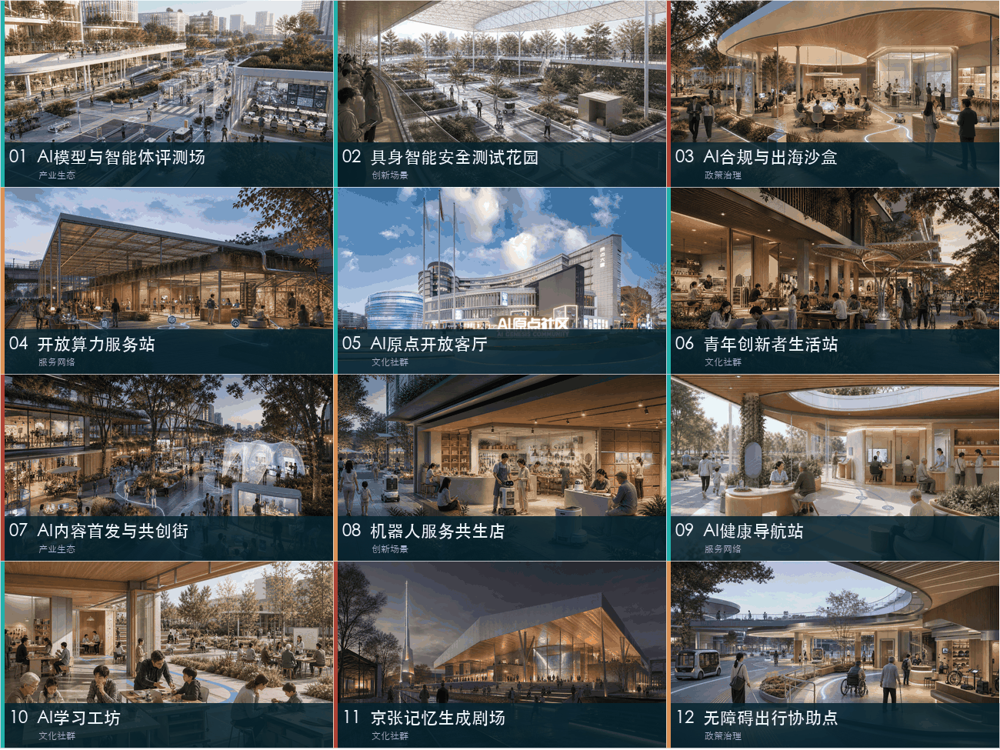
基于FTA内部案例资料与公开参考进行AI辅助场景深化；参考资料仅用于空间关系与视觉语言研究，成果未直接复制第三方原图、标识或水印。
| 场景 | 五高主责 | 主要位置 | 空间与运营动作 | 人工／退出边界 |
|---|---|---|---|---|
| AI模型与智能体评测场 | 产业生态 | 众智园 | 共享评测工位、可审计数据间、预约制专家席 | 隔离数据、人工评审、结果可追溯 |
| 具身智能安全测试花园 | 创新场景 | 众智园 | 公园内嵌可围合测试环、观察台与设备补能点 | 限时限域、物理急停、责任人值守 |
| AI合规与出海沙盒 | 政策治理 | 中关村服务翼 | 法律、标准、知识产权和国际市场联合门诊 | 专业人员复核，不构成监管批准 |
| 开放算力服务站 | 服务网络 | 众智园／原点 | 小团队可预约的端云协同工位与能耗看板 | 配额透明、禁做敏感任务、异常即停 |
| AI原点开放客厅 | 文化社群 | 原点社区 | 发布、路演、共学、展览与社区议事共用一厅 | 公开议程、无障碍、非商业时段保留 |
| 青年创新者生活站 | 文化社群 | 原点社区 | 平价餐饮、短租支持、运动、托育咨询和夜间学习 | 基础服务不与企业录用或数据授权绑定 |
| AI内容首发与共创街 | 产业生态 | 大钟寺 | 内容工作室、首发店、直播与线下体验共用首层 | 生成内容标识、版权审核、随时转人工 |
| 机器人服务共生店 | 创新场景 | 大钟寺 | 餐饮、零售、修理等真实商业中的小规模轮换测试 | 人工服务并行、故障降级、价格透明 |
| AI健康导航站 | 服务网络 | 小月河翼 | 社区入口提供流程解释、预约协助和人工转接 | 不作诊断、最小化采集、人工兜底 |
| AI学习工坊 | 文化社群 | 社区节点 | 教师、学生和家庭共同设定问题并展示过程 | 未成年人保护、教师复核、内容留痕 |
| 京张记忆生成剧场 | 文化社群 | 遗址公园 | 口述史、铁路档案与生成媒介形成可更新公共展演 | 史实／生成分层标注、来源可查、可撤回 |
| 无障碍出行协助点 | 政策治理 | 轨道／慢行节点 | 导航、轮椅与人工志愿服务共用可见窗口 | 保留非数字通道、隐私最小化、公众投诉 |
场景不是技术清单，而是“真实问题—目标用户—空间接口—服务流程—数据边界—人工复核—运营主体—退出机制”的完整服务单元。每个场景先做小规模原型，通过五高诊断后再决定固化、放大、重组或退出；任何涉及健康、未成年人、个人信息和公共决策的场景都必须保留人工服务与投诉渠道。标准 标准 深度
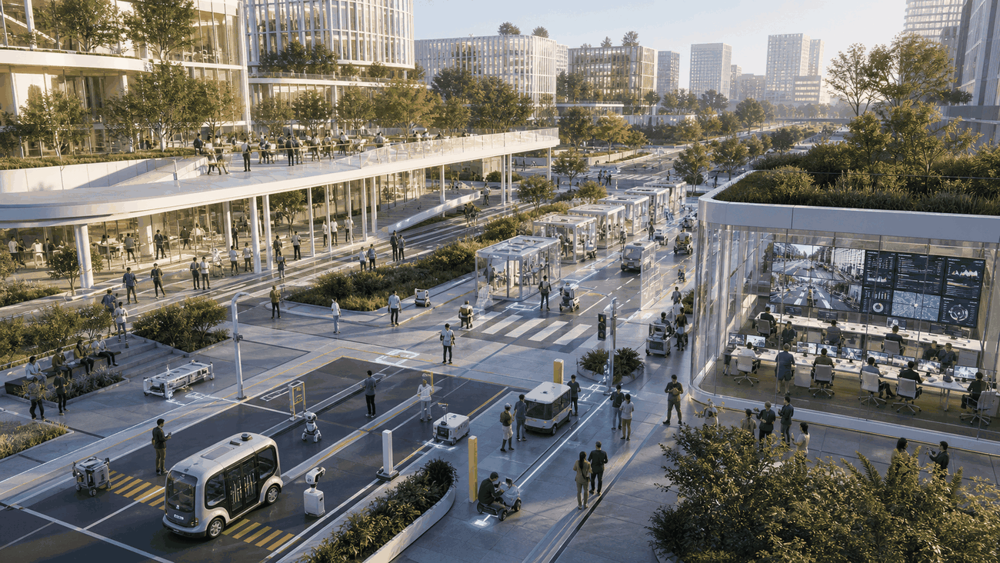
价值／位置／主责： 把封闭评测转化为可预约、可审计的公共验证能力；位于众智园标准与生态创新区；主责产业生态。用户与空间： 模型团队、智能体开发者、评测机构和场景业主共同使用共享评测工位、隔离数据间、专家席和结果复盘墙。运营与边界： 由园区、专业测试方和场景责任单位联合运营；数据分区、人工评审、结果可追溯，不以测试报告替代法定认证。原型／退出： 先用一个可预约评测周验证需求；若缺少真实任务或复用率低，则缩减为移动评测服务。
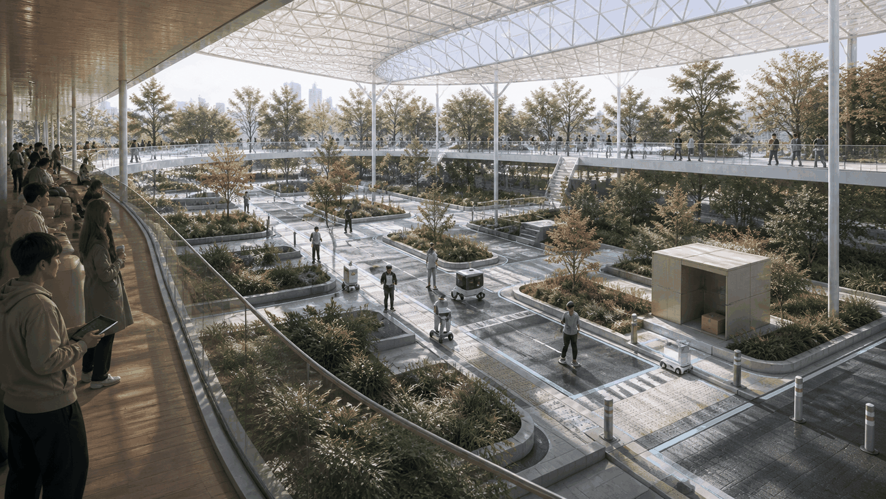
价值／位置／主责： 在进入真实城市前完成低风险、限时限域的具身系统测试；位于众智园测试花园；主责创新场景。用户与空间： 机器人团队、安全评测者和公众观察者使用可围合测试环、软硬边界、观察台、补能点和维护舱。运营与边界： 明确现场责任人、物理急停、非测试绕行线和公众告知，不采集无关行人数据。原型／退出： 从离峰时段和单一设备开始；发生越界、连续故障或投诉未闭环即暂停。
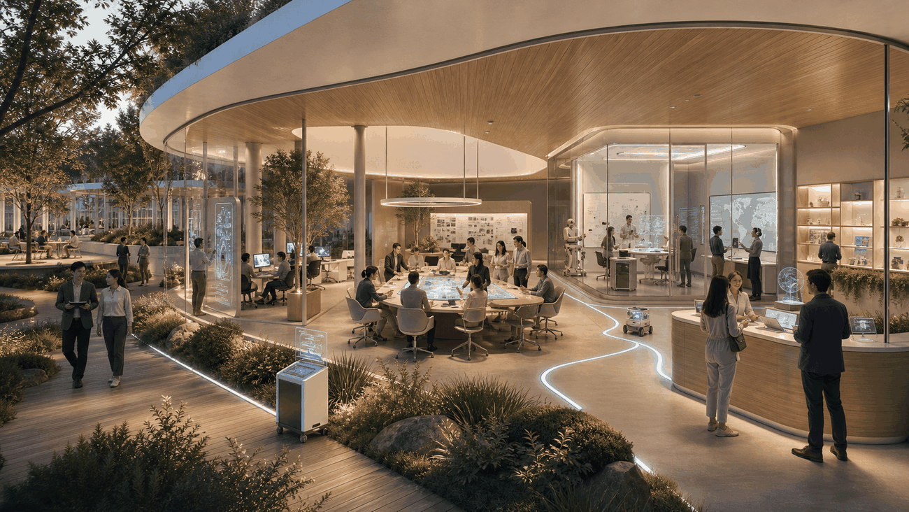
价值／位置／主责： 降低团队识别法律、标准、知识产权和海外市场要求的成本；由中关村科技服务翼跨区提供；主责政策治理。用户与空间： 初创团队、成长企业与专业机构使用联合门诊、规则地图、材料检查台和远程会诊间。运营与边界： 专业人员复核所有输出，结论是咨询建议而非监管许可；敏感材料按最小范围授权。原型／退出： 先组织月度主题门诊；若不能形成明确转介和问题闭环，则并入统一服务窗口。
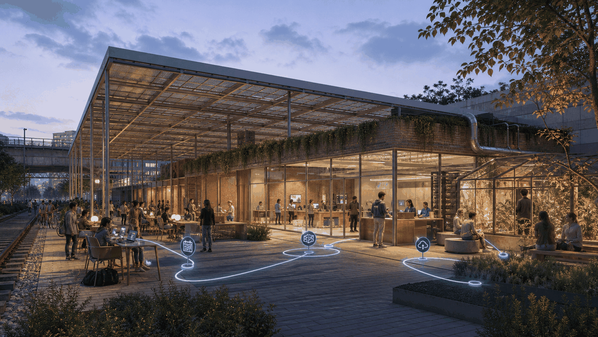
价值／位置／主责： 为小团队提供透明、可负担、有人支持的端云协同入口；优先布置在众智园与原点社区；主责服务网络。用户与空间： 学生、研究者和早期团队使用预约工位、边缘设备、能耗与配额看板、技术支持席。运营与边界： 实名授权但不公开任务内容；敏感、高风险或超额任务禁止运行，异常自动停止并转人工。原型／退出： 从有限时段与标准任务包开始；低利用率时转为巡回技术支持，不固化闲置设备。
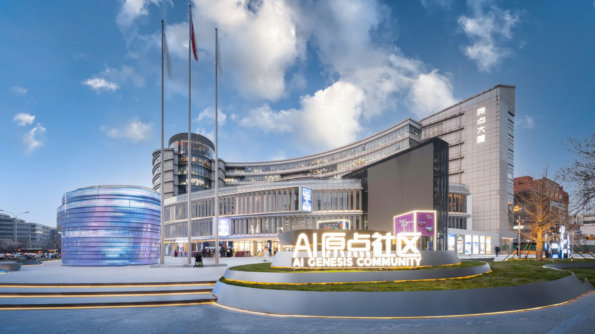
价值／位置／主责： 让原创成果、青年创业、世界会客与社区议事持续相遇；位于原点城市客厅这一核心超级创新元；主责文化社群。用户与空间： 研究者、创业者、居民、学生、投资者使用发布厅、概念验证桌、共学区、展墙与服务窗口。运营与边界： 由共同体运营团队编排公开议程，保留无障碍和非商业时段，活动数据只做聚合统计。原型／退出： 先以现有首层快闪和固定周活动验证复访；若只剩单向展示，则缩小展陈、增加共创与服务功能。来源
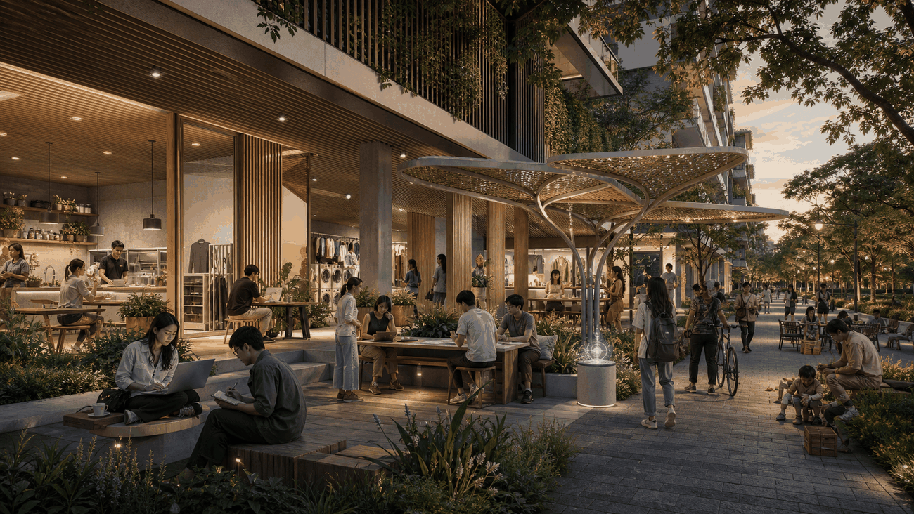
价值／位置／主责： 补齐青年创业者在餐饮、短住、运动、共学和生活咨询上的断点；位于原点大道与人才生活轴；主责文化社群。用户与空间： 青年研究者、创业团队和新到访国际人才使用平价餐食、共享客厅、夜间学习、运动与服务咨询点。运营与边界： 基础生活服务不与招聘、投资或数据授权绑定；不采集不必要的生活轨迹。原型／退出： 联合既有商户与社区设施试运行；不能维持平价与高频使用时转为服务联盟，不另建专用建筑。
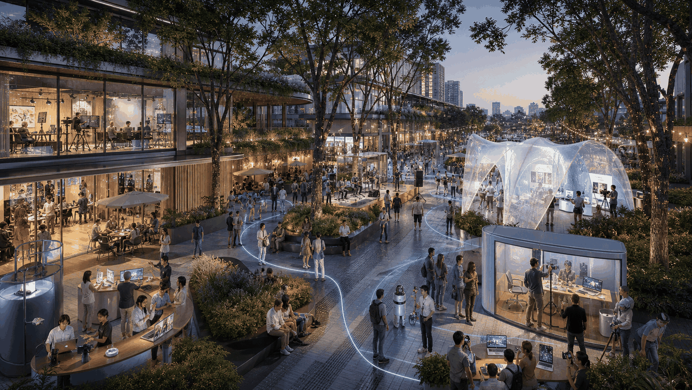
价值／位置／主责： 把AIGC从线上生产转化为可体验、可反馈、可迭代的城市首发界面；位于大钟寺链主企业与京张创新带交汇处；主责产业生态。用户与空间： 内容团队、创作者、品牌、商户和公众使用首层工作室、临时展亭、直播／发布节点与反馈墙。运营与边界： 生成内容明确标识，版权和肖像经人工审核，公众可选择非AI体验并投诉撤回。原型／退出： 以短周期主题街区轮换；只形成流量而无产品迭代或社区收益时停止该主题。
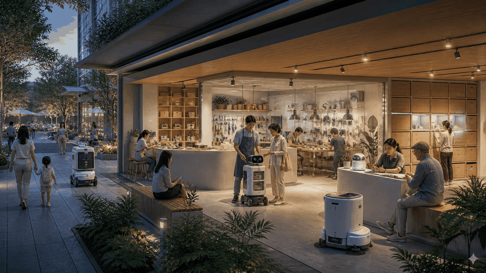
价值／位置／主责： 在真实商业中检验机器人与人协作，而非制作孤立展厅；位于大钟寺商业与生活界面；主责创新场景。用户与空间： 商户、机器人团队、顾客和一线员工共享可轮换测试位、人工服务台、补能维护区和清晰动线。运营与边界： 人工服务始终并行，价格透明，故障立即降级；不得将面部识别作为基本消费条件。原型／退出： 单店、单任务、离峰试验；安全、效率或接受度未达约定门槛即撤回设备。
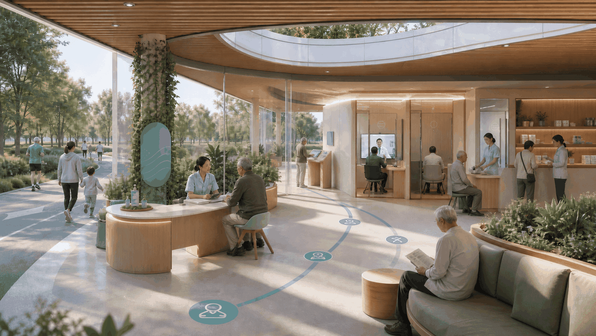
价值／位置／主责： 帮助居民理解流程、预约和找到人工服务，不进行诊断；位于小月河翼社区与健康服务入口；主责服务网络。用户与空间： 居民、老年人、照护者和工作人员使用可见咨询窗、无障碍终端、等候位和人工转接席。运营与边界： 最小化采集，不保存无关健康信息，所有建议可转人工并明确“非医疗诊断”。原型／退出： 从流程解释和预约协助开始；出现误导、隐私风险或人工承接不足即停用AI功能。
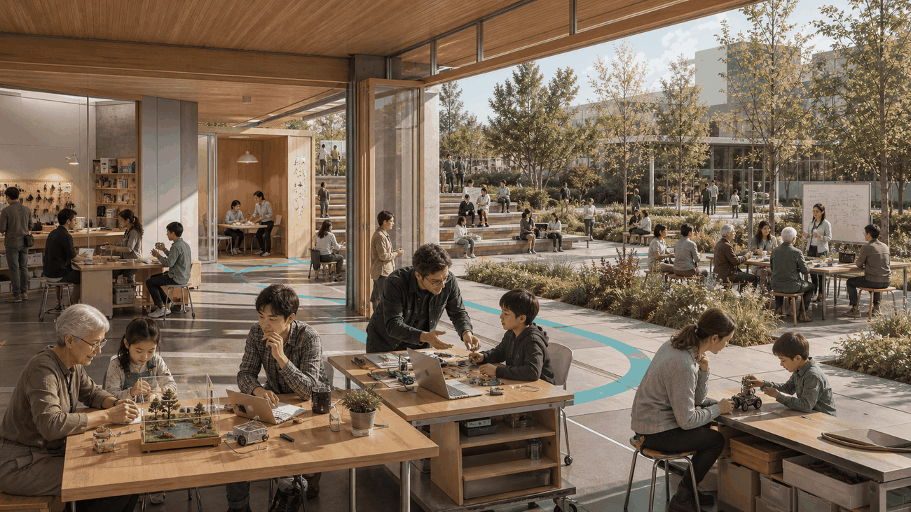
价值／位置／主责： 让学生、家庭与教师共同理解并使用AI解决真实问题；分布于学校、社区和创新区公共空间；主责文化社群。用户与空间： 教师、学生、家庭和开发者使用小组桌、过程展示墙、设备柜和教师复核席。运营与边界： 未成年人保护优先，教师审核内容与任务，不以自动评分替代教育判断。原型／退出： 以短课和社区问题挑战启动；若课程变成工具推销或无法保证教师复核则取消。
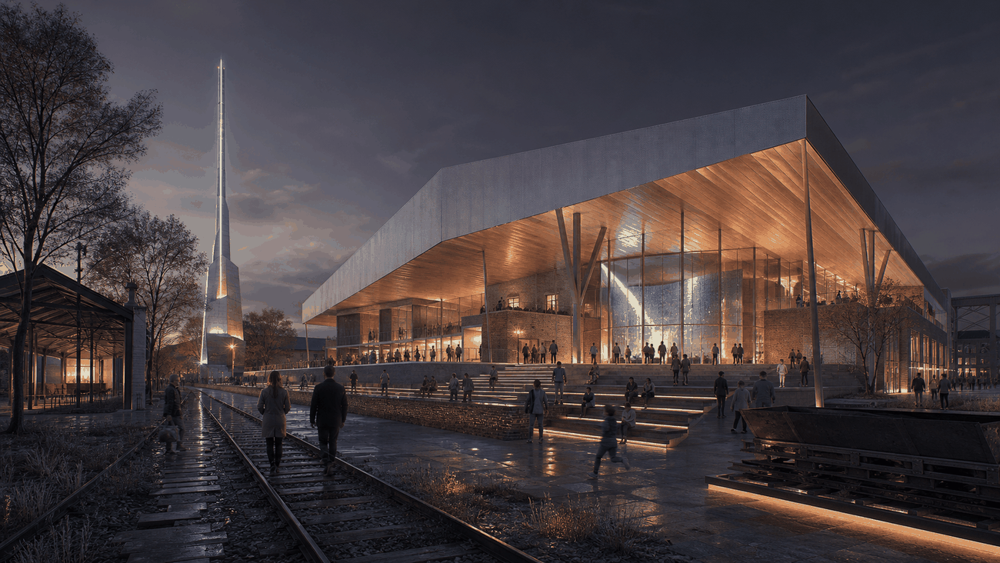
价值／位置／主责： 让铁路遗产、口述史与当代AI文化形成可持续更新的公共叙事；位于京张遗址公园；主责文化社群。用户与空间： 居民、历史研究者、游客、创作者使用档案查询、口述史录制、生成演示和小型展演空间。运营与边界： 史实与生成内容分层标注，来源可查，贡献者可撤回授权；不虚构人物经历。原型／退出： 先从一个经核验主题和社区共创夜开始；无法完成来源核验的内容不公开。
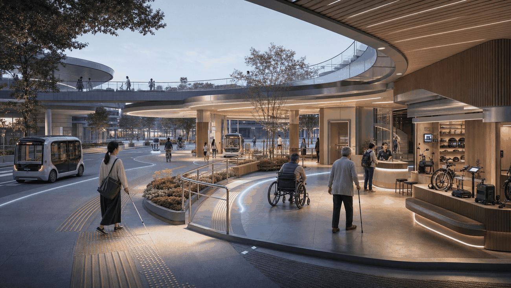
价值／位置／主责： 把数字导航、实体无障碍设施和人工志愿服务放在同一可见窗口；位于轨道站点与慢行断点；主责政策治理。用户与空间： 轮椅使用者、视听障碍者、老年人和临时行动不便者使用低位服务台、触觉／语音信息、轮椅借用与人工陪同行动点。运营与边界： 始终保留非数字通道，定位与需求数据最小化，设置公众投诉和现场人工责任人。原型／退出： 从关键站点的人工协助＋轻量导航开始；若数字功能不可靠则关闭算法、保留人工服务。
众智园的共享评测设施把模型、智能体、城市服务任务与人工评审组织在同一条可审计流程中，形成面向全线开放的验证能力。
开放客厅不是展示大厅，而是研究者、创业者、居民、学生和专业服务者持续交往、共学与发起合作的公共界面。
大钟寺以首层工作室、临时展亭、发布节点和社区反馈界面组织内容生产、首发、体验与再迭代。
铁路遗产、口述史与生成媒介共同构成可更新的公共文化剧场，史实与生成内容分层标注、来源可查。
| 五高法则 | 主责场景 | 跨场景协同结果 |
|---|---|---|
| 产业生态 | 01评测场、07共创街 | 形成“技术验证—产品首发—用户反馈—市场转化”的短链协作 |
| 文化社群 | 05开放客厅、06生活站、10学习工坊、11记忆剧场 | 将人才生活、跨代学习、公共文化和持续社群组织为日常创新基础设施 |
| 服务网络 | 04算力站、09健康导航站 | 让算力、技术支持和公共服务成为可进入、可预约、有人兜底的共享底座 |
| 创新场景 | 02测试花园、08共生店 | 通过可围合、可轮换、可降级的真实场景支持具身智能和机器人持续迭代 |
| 政策治理 | 03合规沙盒、12出行协助点 | 把合规、无障碍、人工复核、数据最小化和退出机制嵌入空间与运营流程 |
用地策略以混合、适配和公共性为原则。临时边界内的概念用地划分覆盖创新研发、混合服务、人才生活、公共服务、绿地与公共空间、道路交通等类型，并由同一组共享边界生成，避免重叠与空隙。空间数据 指标
现阶段只提出四类更新动作：完整保留、低扰动适配、界面激活、待专业论证的新建可能。由于缺少现状建筑轮廓、用途、年代、结构安全、权属与控规资料，具体建筑拆改留、开发强度和高度均标记为待正式数据补齐；图中建筑只表达概念性空间供给和节点关系，不构成地块结论。[assumption:A-BUILDING-001] 标准
交通策略采用“轨道优先、慢行成网、道路微循环、物流分时、停车共享”的五层体系。京张遗址公园形成连续步行和骑行主脊；横向城市道路与社区街巷形成东西缝合；轨道站点组织换乘、步行导向与共享服务；研发物流避开主要公共活动时段；停车设施优先共享和动态引导。空间数据 深度
市政和新型基础设施采用“公共底座、按需接入”策略，包括端侧算力接口、公共网络、充电与机器人补能、数据合规服务、雨洪与能源监测。所有容量、管线路径、消防和能源结论待专项资料与专业团队核定，本方案只确定服务需求、空间接口和分期优先级。[assumption:A-MUNICIPAL-001]

京张遗址公园被定义为“可进入的公共创新基础设施”：日常首先是生态、慢行、休憩和社区空间，其次才是AI展示与测试。所有技术装置必须可关闭、可维护、不侵占基本公共服务，并通过低照度、低噪声、无障碍和儿童安全设计保持公共性。标准 空间数据
三个AI朝圣地标构成从源头到应用的公共叙事：AI原点大厅展示研究者、创业者与开放问题；全球AI调度厅可视化技术、场景和公共责任的运行状态；创新者星轨沿遗址公园记录可核验的技术贡献、失败经验和城市共创者。地标不是大型造型物，而是可学习、可交流、可持续更新的公共制度与空间载体。
城市风貌以“工业遗产的克制底色、AI节点的精准高亮、日常生活的温暖界面”为原则。保留铁路材料、尺度和线性秩序，新增设施采用可逆、模块化、低碳构造；夜间不追求泛光照明和赛博奇观，而以必要节点和活动界面形成可识别的AI LINE 1。
实施采用FTA“诊断—战略—设计—运营—投资反馈”的全生命周期闭环，并坚持“先运营验证、再空间固化”。诊断识别五高短板，战略选择应当被放大的城市优势，设计提供可逆空间接口，运营用真实用户和项目检验假设，投资再聚焦已经形成生态效应的节点。空间数据 深度
年度活动体系包括AI LINE 1全球创新周、三地轮值Demo Day、开放测试季、京张AI文化节和青年开发者驻留计划。活动不是一次性传播，而是进入“发现问题—招募团队—开放场景—验证评估—资本与服务对接—规模化或退出”的转化路径。所有主办主体、预算、政策和投资安排均为概念建议，须经相关机构另行确认。
长期运营建议设立多方参与的AI LINE 1协作平台，连接政府部门、园区和企业、高校研究机构、专业服务、社区与公众。平台不替代行政管理，主要负责场景清单、活动策划、共享设施预约、五高年度诊断、品牌维护和跨区项目调度。收入与资源机制可研究公共服务采购、会员服务、活动合作、共享设施服务和成果转化等多元路径，但不构成投资承诺。
以下是供实施主体确认的建议门槛，不是现状成绩或政府承诺。每个原型启动前先登记基线、责任人、服务对象、数据字段和停止条件；实际阈值由运营、专业审查和公众代表在启动会上确认，并写入公开台账。
| 决策时点 | 建议牵头角色 | 必须形成的证据 | 进入下一阶段的最低条件 | 未通过处理 |
|---|---|---|---|---|
| 启动前 | 场景业主＋园区／社区＋专业审查人 | 责任矩阵、数据清单、无障碍检查、人工通道、投诉与急停流程 | 五项文件齐备且现场责任人签认 | 不启动 |
| 原型运行4—8周 | 现场运营人＋用户代表 | 使用日志、重复使用、故障、人工接管、投诉及公共反馈 | 出现真实重复使用；重大安全问题为零；一般问题均有责任人与关闭期限 | 修正后复测或关闭AI功能 |
| 跨区过线 | AI LINE 1协作平台建议机制 | 原点概念验证记录、众智园评测记录、大钟寺使用反馈 | 三份记录可追溯，且不存在未关闭的重大风险 | 退回上一环节，不进入扩展 |
| 空间固化前 | 规划、建筑、交通、消防、运营等专业团队 | 权属、控规、造价、运维、消防、交通和公众参与意见 | 专业条件明确、运营主体和资金来源经有权主体确认 | 保持可逆原型，不建设永久设施 |
| 年度复盘 | 多方协作平台＋公众观察 | 五高仪表盘、项目流转、公共共益、投诉闭环与退出清单 | 只对证据持续改善的项目追加资源 | 降级、合并、暂停或退出 |
五高仪表盘不以访问量代替成效：产业生态看“完成三次过线的项目数与转化断点”；文化社群看“居民、青年和专业人员的重复参与及可负担性”；服务网络看“响应时间、转介完成率和小团队可达性”；创新场景看“安全运行、人工接管、复用和真实问题改善”；政策治理看“审计完成、投诉闭环、无障碍复核和按规则退出”。所有基线值在原型启动后实测建立，报告中不预填虚假成绩。
以下门槛在启动前登记，是未来判定线而非现状成绩。三个试点均在第0周锁定T0基线，在D30、D60、D90复测；原始记录、责任签认、异常与退出决定进入可审计台账。完整字段见simulation.json。指标 指标
| 试点 | 最小样本 | D90通过线 | 暂缓／停止线 |
|---|---|---|---|
| AI原点开放客厅＋概念验证服务 | ≥120名去重参与者、≥8场公开活动、≥6支概念验证团队 | 重复参与≥30%；≥2支团队形成可追溯验证或转介；体验中位数≥4/5；重大隐私／安全事件=0 | 样本不足只延长不外推；重大事件未关闭或人工公共服务无法维持即停 |
| 大钟寺公共首层＋连续步行原型 | ≥240次过街观察、≥120份拦截访谈、≥18个观测时段 | 无障碍检查100%；绕行／到达时间中位数较T0改善≥20%；冲突率不恶化且目标改善≥20%；重大交通事件=0 | 冲突率恶化、重大事件或专业复核不通过即停；仅覆盖辅助路／支路／到达段 |
| 众智园可围合安全测试花园 | ≥30次受监管测试、≥5支团队、≥10次急停演练 | 登记与责任签认100%；急停成功100%；未受控越界=0；人工接管中位数≤30秒；事件按期关闭100% | 急停失败、越界、重大人身风险或责任主体退出即停 |
成本级仅用于前期决策：S为服务、流程和轻量设备配置，M为可逆空间改造，L为永久工程；在正式红线、权属、造价和专业审查完成前，本方案不启动L级建设。
| 节点 | 90天最小空间包 | 建议牵头角色 | 成本级 | 启动前置条件 | D90过线／停线 |
|---|---|---|---|---|---|
| AI原点社区 | 开放客厅、概念验证服务台、公开项目台账 | 社区／园区运营＋高校转化＋中关村服务翼 | S—M | 场地许可、运营人、数据告知、无障碍与人工服务 | 按预注册试点过线；重大事件未关闭或人工公共服务失效即停 |
| 众智园 | 可围合测试花园、责任签认台、急停区与观察界面 | 园区运营＋技术评测＋安全审查 | M | 围合、消防、应急、设备保险、责任主体与退出路径 | 急停100%、越界0；任一急停失败或责任主体退出即停 |
| 大钟寺 | 辅助路／到达段连续步行、公共首层、人工交接点 | 街道／片区运营＋交通与无障碍专业团队 | M | 道路与场地授权、交通T0基线、专业复核、活动预案 | 到达改善且冲突不恶化；冲突恶化、重大事件或复核不通过即停 |
AI原点社区与大钟寺的任务书以FTA真实项目实践为经验底座；众智园为本次征集提出的设计性原型。三者均不是已批准的工程承诺，正式实施仍以有权主体、专业审查和补充数据为准。来源 来源
三图中的尺寸均为概念询值，不是现状测绘、施工图或审批结论；正式红线、权属、交通、消防、无障碍和设备风险资料补齐后必须复核。大钟寺图引用北京市现行慢行标准中的过街、盲道、缘石坡道、自行车过街带与安全岛底线；铁路和快速路主车道仍按立体分离原则，不把辅助路原型误写成跨三环工程结论。来源 来源 指标


本方案以大钟寺近期干预演示一套可复算的内部概念比选方法。这里的86、82和74分只用于说明“软性加权排序不能越过硬约束”，不是比赛评分、官方结论，也不声称来自某个已经运行的AI模型。按公开权重计算，A“标志性跨三环桥站一体结构”得到最高概念分86，B“辅助路／到达段连续步行＋公共首层＋导视原型”为82；但城市设计负责人执行硬约束门后否决A，因为正式道路／铁路红线、权属、结构、消防、无障碍、造价、运营与审批资料均缺失，且方案不可逆。最终选择可逆的B进入90天概念验证，C地下连廊保留待补数。工具可以协助扩展选项；人对权重、资料边界、公共安全和最终决定负责。完整权重、计算、否决理由和重开条件见simulation.json。指标 [assumption:A-CONTROLS-001]
指标分为三类：由GeoJSON直接复算的空间指标、由公开资料确认的任务指标、待正式资料补齐的规划与运营指标。空间指标包括临时边界面积、各类用地面积、绿地与公共空间比例、道路与慢行长度、重点区数量和分期范围；任务指标包括12张场景卡、3个产业测试场景、5类用户画像、3个朝圣地标和6项智能体任务覆盖；容积率、高度、建筑密度、精确绿地率、投资额、产值和实施主体承诺保持未知或概念状态。指标 指标 [assumption:A-CONTROLS-001]
当前临时图层经EPSG:4548投影复算并按发布精度取整：提交边界面积约11,412,825平方米，概念绿地面积约2,204,265平方米、比例19.3139%。原始几何可由评审脚本复算，正文不以小数位制造虚假精度。指标 指标 指标
概念公共空间面积约2,023,722平方米、比例17.7320%，概念建筑基底面积约241,863平方米。以上数值只检验本次图层之间是否一致，不是法定指标；官方边界和控规发布后必须整体替换与复算。指标 指标 指标

机器核验层由metrics.json、compliance_matrix.json、standard_matrix.json和design_depth_matrix.json完整承载。正文只解释指标的设计意义：创新网络是否完整、公共空间是否支持交往、场景是否可验证、实施是否可分期、风险是否有人负责，而不是用未经证实的宏大数字制造确定性。
本方案是开放共创建议，不替代正式规划，不构成政府审定、投资承诺、工程可行性或具体地块拆改留结论。所有空间落地建议均为概念建议、参考方案或可供专业团队深化研究的材料。来源
参赛文字与图件均针对百年京张组织表达。原点社区与大钟寺的诊断、策略和实施框架具有FTA真实项目经验底座；为本次征集重新制作的四张鸟瞰仍是概念性空间转译，不是项目实景、竣工证明或工程承诺。场景05采用FTA提供的AI原点社区项目图片。生成方式、来源与权利限制详见report/copyright_statement.md。
主要风险包括：临时边界精度不足；控规、权属、建筑、市政、交通和文保资料缺失；AI公共服务的隐私、偏差、故障与人工兜底；共享设施和长期运营主体尚未确认。每项风险均设置补数、专业复核、试点、人工接管或停止条件，避免把愿景写成事实。
参考资料按“项目主控—专业标准—案例背景”三级使用。项目主控资料决定三层范围、三区两翼与任务边界；专业标准用于校正城市设计、控规表述、用地分类、AI治理和无障碍底线；全球案例只用于比较协作机制，不向本项目移植未经验证的规模、投资或绩效数字。所有来源的可用范围、不可用范围、访问时间和权威等级均在sources.json登记，正文中的判断通过[source:*]锚点追溯。当前最大资料缺口仍是官方精确边界、控规、权属、建筑、市政、交通和文保条件，因此参考资料不能被反向解释为本项目已经获得相应审批或实施承诺。正式资料发布后，应先替换空间约束，再统一复算图层、指标、图纸与矩阵，而不是局部修改文字。来源 来源 深度
sources.json。